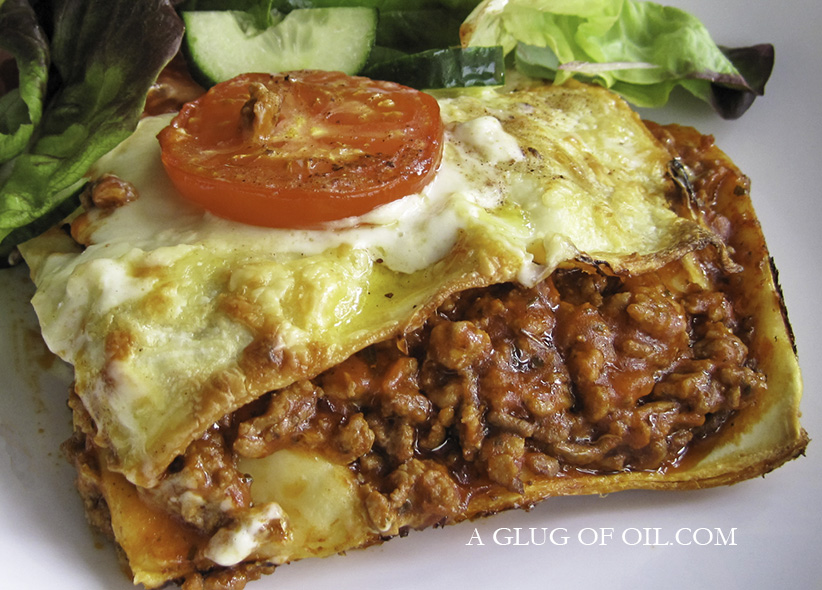

"Lasagne"

Histoire de la lasagne
Les lasagnes sont des grandes pâtes alimentaires qui ont fait leur apparition en Italie au 13ème siècle. Le terme vient du mot grec « lasagna » qui signifie « trépied de cuisine ». Ce mot était en ces temps utilisé pour désigner le plat dans lequel les pâtes étaient préparées. Avant cela, les Grecs et les Romains les appelaient les lagana qui étaient de fines abaisse de pâtes qu’ils cuisaient dans de l’eau ou à la vapeur.
Les Italiens préparaient les lagana, les ancêtres des lasagnes très simplement. Ils élaboraient des terrines constituées de plusieurs couches de pâtes et de farce tendre et moelleuse. Les farces étaient faites avec de la chair de poulet, de porc, de poisson qui étaient par la suite mélangées avec des œufs. Ils nappaient la préparation avec du garum ou de la saumure de poisson. Le tout cuisait en croûte tout comme un pâté. Un peu plus proche dans l’histoire, le terme lagana fut transformé en lasana. Cette évolution a sans doute été engendrée par les influences des lauzina des Arabes qui étaient des feuilles de pâte également très fines et fourrées avec des amandes pilées.
Liste d'ingrédient
- 1 boîte de 500 g de pâtes à lasagne
- 75 ml (⅓ tasse) d'huile végétale
- 50 g (0,75 lbs) de viande haché (bœuf, porc, veau ou encore mieux, un mélange des trois)
- 2 grosses carottes coupées en demi-rondelles
- 2 branches de céleri émincées
- ½ oignon ciselé
- 2 gousses d'ail hachées
- 1 can (boîte de conserve) de 796 ml de tomate broyées
- 25 ml (5 c. à thé) de beurre
- 25 ml (5 c. à thé) de farine
- 250 ml (1 tasse) de lait
- 500 ml (2 tasses) de fromage râpé de ton choix
- 180 ml (¾ tasse) de fromage ricotta
- Sel, poivre au goût
étape de préparation
- Cuire les pâtes à lasagne selon les directives sur l'emballage, les égoutter et les asperger d'un filet d'huile afin qu'elles ne collent pas ensemble
- Dans un chaudron chauffé à feu mi-fort avec l'huile, colorer la viande
- Ajouter les carottes, le céleri, l'oignon et l'ail et poursuivre la cuisson 3 minutes
- Verser la canne de tomates, réduire le feu et laisser mijoter environ 45 minutes
- Rectifier l'assaisonnement
- Dans une casserole à feu mi-fort, fondre le beurre avec la farine pour former une pâte (un roux)
- Incorporer le lait peu à peu en fouettant jusqu'à l'obtention d'une sauce béchamel
- Rectifier l'assaisonnement
- Verser un peu de sauce viande dans le fond d'une lèche frite et couvrir avec des pâtes à lasagne
- Couvrir de sauce à la viande et la moitié du fromage râpé
- Faire un deuxième étage de pâte et couvrir avec la sauce béchamel
- Couvrir avec un troisième étage de pâtes le reste de la sauce viande, le fromage ricotta et le reste du fromage râpé
- Cuire au four préchauffé à 375ºF environ 40 minutes
- Couper et servir